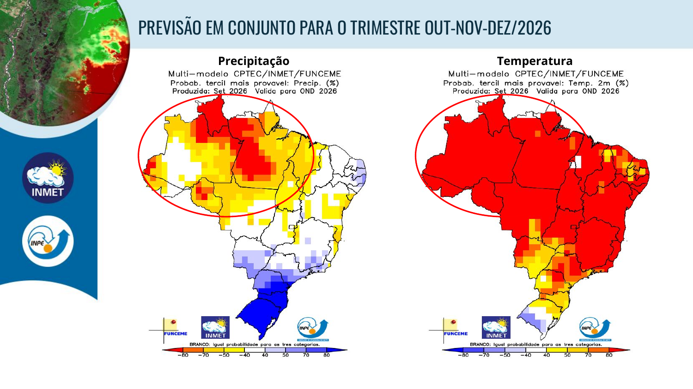
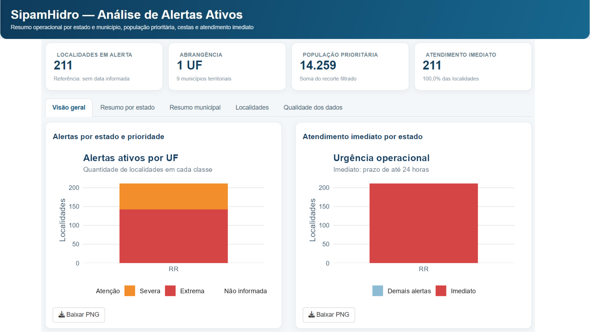
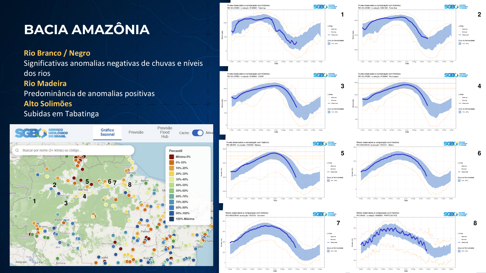
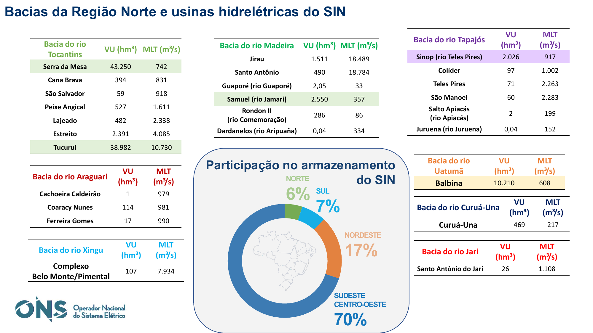
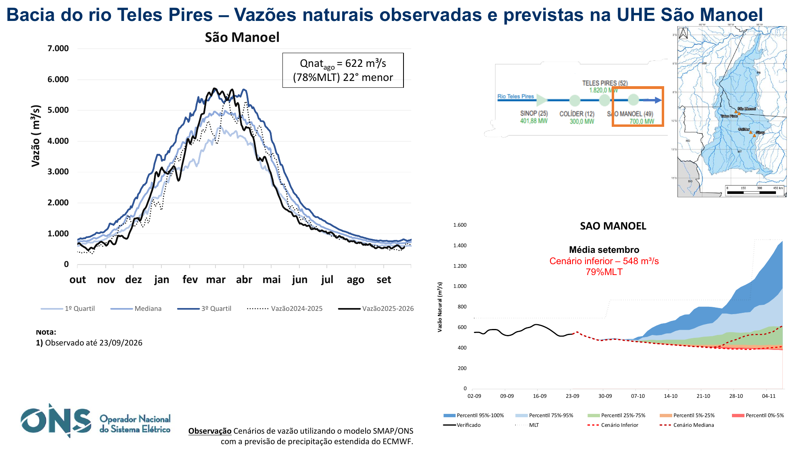

Resumo executivo
A reunião evidenciou uma condição sazonalmente seca, porém espacial e hidrologicamente heterogênea. O conjunto das apresentações não sustenta caracterização de crise hidrológica generalizada na Amazônia. Em várias estações, níveis baixos permanecem compatíveis com a fase do ciclo anual e com as séries históricas, embora existam anomalias e impactos localizados.
O ponto interpretativo central é distinguir cota baixa, anomalia relativa e criticidade operacional. O SGB enfatizou a posição dos níveis dentro do histórico e não caracterizou alarme regional; o CENSIPAM identificou anomalias e prioridades territoriais localizadas. As leituras são complementares.
Verticais institucionais
INPE / INMET
Transição para a estação chuvosa com precipitação irregular no curto prazo. O sinal subsazonal e sazonal ainda mantém áreas com déficit de chuva e temperaturas acima da climatologia, de modo que episódios isolados não significam recomposição hidrológica consolidada.

CENSIPAM / SipamHidro
Diagnóstico de estiagem, níveis e criticidade operacional. Tabatinga já apresenta subida; Boa Vista concentra sinal negativo mais forte. O painel operacional de Roraima evidencia impactos localizados relevantes.

SGB / CPRM
Leitura por percentis históricos e hidrogramas sazonais. A apresentação oral destacou ausência de alarme hidrológico regional: muitos níveis baixos são compatíveis com a sazonalidade. Rio Branco/Rio Negro concentram anomalias negativas; o Madeira tem predominância positiva; o Alto Solimões já sobe em Tabatinga.

ONS
Resposta hidroenergética e operativa distinta entre bacias. Madeira acima da média relativa; Xingu, Araguari e Teles Pires abaixo da MLT; Balbina/Uatumã com a maior anomalia relativa de afluência do conjunto.

Cruzamento técnico
Tapajós / Teles Pires
O Tapajós sintetiza a necessidade de leitura por escala. Itaituba apresenta recessão e anomalia negativa leve, enquanto Santarém permanece em normalidade apesar da queda de nível. No alto sistema, São Manoel apresenta vazões abaixo da MLT. Recessão no baixo Tapajós e déficit relativo no Teles Pires não constituem um único indicador de criticidade.

Madeira
Condição hidrológica relativamente favorável. O principal ponto é operacional: navegabilidade e replecionamento de Jirau.
Rio Branco / Rio Negro
Maior convergência de sinais negativos entre SGB e CENSIPAM. Atenção localizada, sem extrapolação para toda a Amazônia.
Solimões / Amazonas
Tabatinga já apresenta subida, mas a propagação é defasada e Manaus, Beruri e Óbidos ainda atravessam a recessão.
Xingu e Uatumã
Xingu segue abaixo da média, com acompanhamento do hidrograma do TVR. Balbina apresenta afluência excepcionalmente baixa em termos relativos, porém armazenamento ainda relevante.
Reunião em números
| Local / indicador | Valor / condição | Leitura |
|---|---|---|
| Tabatinga / Solimões | +22 cm em 15 dias | Normalidade; início de subida |
| Beruri / Solimões | -298 cm em 15 dias | Anomalia negativa leve |
| Boa Vista / Rio Branco | -24 cm em 15 dias | Anomalia negativa severa |
| Itaituba / Tapajós | -99 cm em 15 dias | Anomalia negativa leve |
| Santarém / Tapajós | -116 cm em 15 dias | Normalidade |
| Santo Antônio / Madeira | 9.278 m³/s · 130% MLT | Condição relativa favorável |
| São Manoel / Teles Pires | 622 m³/s · 78% MLT | Déficit relativo no alto Tapajós |
| Balbina / Uatumã | 126 m³/s · 30% MLT | Menor da série de 34 anos apresentada |
| Balbina — volume útil | ~64% | Reserva ainda relevante |
Nota Técnica final
A versão integral, com metodologia, verticais, cruzamento técnico, cenários, conclusões e anexo numérico, está disponível para consulta e download.
Baixar NT final em PDF